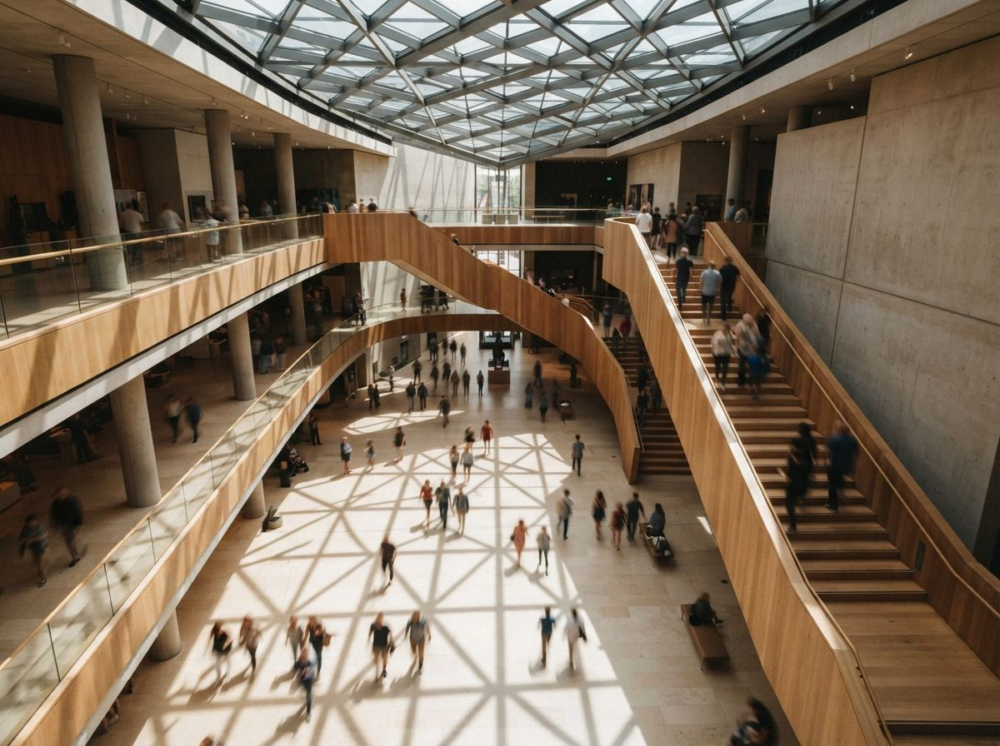
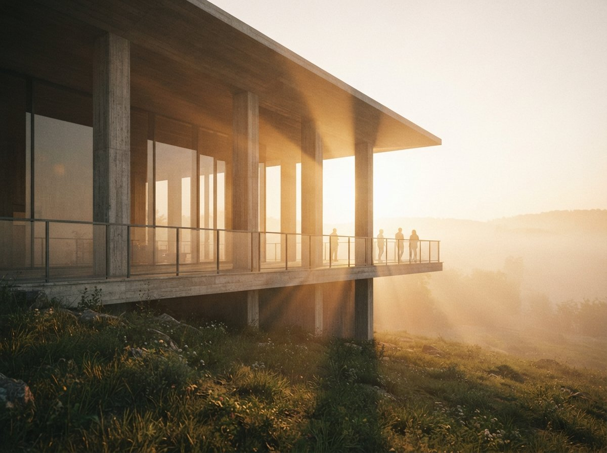

This is one of the quieter recurring asks in the archviz and Flux threads this week, sitting underneath the louder questions about photorealism and 4K. People want to take a render the client already accepted and show it under different light, dusk, overcast, a low winter sun, the windows glowing for an evening view. They reach for the prompt box because that is where the light words live, and the prompt box betrays them every time.
The reason is worth stating plainly, because it governs everything that follows. A new prompt is a new generation. The model holds no memory of the image it made an hour ago, so asking for "the same building at dusk" is asking it to invent a fresh building that happens to match a description. It will get the description right and the building wrong. Relighting, done properly, never goes back to the prompt box for the structure. It treats the approved image as fixed and changes only the one variable you actually want to move.

Three ways to move the light, ranked
There is a clean hierarchy here, and it runs from most accurate to most convenient. Pick the highest rung you can still reach with the assets you have.
1. Back in the 3D model, if you still hold it
If the render started life in a real model, in SketchUp, Revit, Rhino, or a real-time engine, the correct relight is not an AI job at all. Move the sun, change the time of day, and re-render. The shadows are computed from actual geometry, so they fall exactly where the building would cast them, and the AI styling pass goes back on top of a base that is already lit correctly. This is slower and it assumes you kept the scene, but it is the only route where the light is true rather than plausible. When the deliverable is going to a planner who will check sun paths, this is the rung to stand on.
2. In the rendering tool's own lighting controls
The in-model AI tools have been adding lighting presets and environment controls precisely because this request is so common. Veras and its peers let you hold the geometry input and swap the lighting condition or HDRI, which keeps the building locked because the model is still feeding it the structure. This is the middle rung: faster than a full re-render, more faithful than a flat-image pass, and the natural choice when the render lives inside a plugin you are already paying for.
3. A diffusion pass over the flat image
Often all you have is the final PNG. No scene, no plugin, just the picture. This is the rung most people are actually standing on when they ask the question, and it works, but only if you stop treating it like a prompt and start treating it like a controlled pass. The method is image-to-image at low denoise with a structure control fed from the original. The next section is the whole game.
The settings that keep the building
A flat-image relight lives or dies on two dials, and they are the same two that govern every careful image-to-image job in architecture: how much freedom you give the model, and how hard you pin it to the source.
Denoise. Keep it low, roughly 0.25 to 0.4 for a lighting change. Low enough that the walls, openings and massing survive untouched; high enough that the model can actually repaint the light, lengthen the shadows, warm the palette, and bring up the window glow. Push past 0.45 and the relight starts redesigning, because every region now has licence to reinterpret, and a "dusk" instruction at high denoise will happily move a balcony while it is at it.
Structure control. Low denoise alone is not enough on a large facade, so feed the original image into a structure-holding control, a depth or lineart input, so every part of the frame is told to stay where it is. With the geometry pinned by control and the freedom capped by denoise, the only thing left for the model to change is the thing you asked for. Your prompt then describes light and nothing else: "warm evening sun, long shadows, interior lights on, deep blue sky." No architecture words. The architecture is already decided.
| Relight route | Geometry fidelity | When it wins |
|---|---|---|
| Re-render in the 3D model | Exact, shadows computed | Planning views, sun-path scrutiny, you kept the scene. |
| Plugin lighting controls | High, geometry held by the model | Render lives in Veras or a real-time engine you own. |
| Flat-image diffusion pass | Good, if denoise stays ~0.3 with control | All you have is the PNG and the clock is running. |
| Re-prompting "same building, dusk" | None, it builds a new one | Never. This is the move that started the problem. |

The part it gets wrong: shadows
Here is the failure that separates a relight that holds from one that quietly falls apart, and almost nobody checks it before sending the image out. Diffusion models do not cast shadows. They paint shadows that look right at a glance, which is a very different thing. Ask for a low evening sun and the model will add long, warm shadows, and it will add them in the wrong places. They point in two directions in the same image. They fall on the sunny side of a recess. An overhang that should throw a hard band across the entrance throws nothing, while a blank wall grows a shadow with no object to cast it.
A casual viewer may not name the problem, but they feel that the image is off, and a reviewer who knows the site will spot a shadow pointing the wrong way immediately. The defence is to give the model a real cue instead of letting it guess. A depth map from the original tells it where surfaces sit in space, which constrains where dark should land. Better still, if you took the 3D route for even a quick grey-box pass, drop the computed shadows in as a layer and let the diffusion styling sit on top of shadows that are actually correct. Plausible is the enemy here. The whole value of a relit render is that it reads as the same true building under different light, and a shadow pointing east at sunset throws that away in one glance.
One pass, one variable
The discipline that makes all of this work is the same one that makes upscaling work, and it is the opposite of how the prompt box invites you to think. The tools put light, structure and style in the same text field and imply you can stir them together in one shot. You cannot, not without losing the building. So you separate the jobs. The geometry was decided when the scheme was approved and it does not move again. The light is a second, narrow pass laid over a frozen base, changing one thing on purpose. The moment your relight prompt mentions a window, a floor count, or a material, you have left the relight and started a redesign.
A relit render is a promise that nothing changed except the hour. Break that quietly and you have shown the client a different building and called it the same one.
So before you reach for the prompt, find the highest rung you can stand on. Still have the model? Move the sun and re-render. Render lives in the plugin? Swap the lighting input and keep the geometry feeding in. Down to a flat PNG? Image-to-image at a third denoise, a depth or line control pinning every edge, and a prompt that talks about light and only light. Then check the shadows against the sun you claimed, because that is the one tell that survives a beautiful image and tells a reviewer the truth. Get that right and the committee sees their building at dusk, warm and lit and exactly as approved, which is the only version worth showing them.
Drawn from this week's intel sweep of 2026 architectural visualization coverage, where community threads on r/FluxAI and r/comfyui kept returning to the same enhancement requests on finished renders, lighting, shadows, and reflections, while keeping the original geometry intact. ArchiGen AI runs no sponsored placements and has no affiliate relationship with any tool named here.